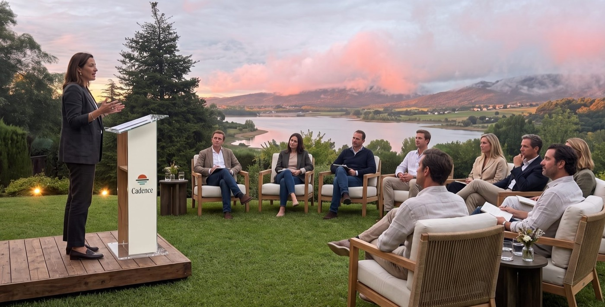
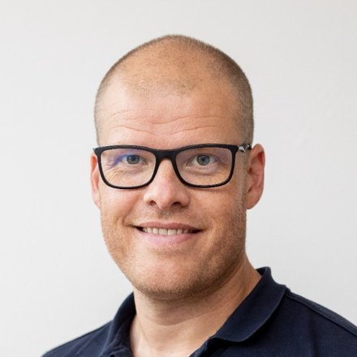
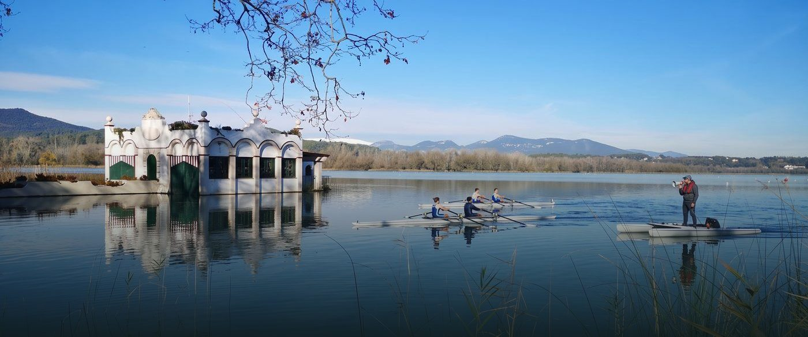

For founders
Your fund pays. Your problems get solved. Nobody else needs to know.
A private 15-minute Check finds what is really holding your company back.
What you say and write in your Check
Your result
Your Sprint: the goal, the number, your weekly notes
Real problems, solved
The problems that never make the board deck.
What founders bring, and what happens next.
"Nine months of runway, and we don't agree: raise or cut?"
→A Sprint on runway with a fractional CFO.
"Our first sales hire isn't working, and nobody says it."
→A Sprint on hiring with someone who has built sales teams.
"My co-founder decides alone, and I hear about it in the stand-up."
→A conversation with Emma on how you two decide, then one rule you both agree to.
"We raise in six months and the story doesn't land."
→An open circle with an expert who raised that round.
- Work on a solution with your expert
- Test it with peers in your circle
- Test it in real life in your company
- Come back to your expert
How it works
The real problem is rarely the first one you name.
A missed forecast can be a decision problem. So we start by listening.
- 01
Find it.
A private conversation with Emma, our AI interviewer, sets the base. Then a deep dive with a specialist builds the full scope.
What happens between you two when you disagree?
1"Our first sales hire isn't working."
2"Runway is shorter than the plan assumes."
- 02
See it together.
When you both say yes, you see where you and your co-founder agree and where you quietly differ. Never each other's words.
Founder A says yesFounder B says yes
How we decideYou differWho carries whatYou agreeWhere we are goingYou agree - 03
Solve it.
A Cadence Sprint on the problem you choose.
Week 3 of 8 · one goal, one numberExtend our runway
Number now · 10 months, from 9 - 04
Keep it moving.
What is hardest now, and what moved.
+Go-to-marketnew
=Runwaystill there
✓The senior hiregone
What a Sprint feels like
Six to eight weeks. Then it is done.
- You write your plan in ten minutes: the goal, the one number, why now.
- You meet your expert and your circle at the kick-off.
- Each week you spend five minutes on four lines.
- In the last week you measure, and write down what you keep doing.

Your circle
No daily app. No streaks. It asks for your attention only when there is a date and a reason.
Private by design
Your fund pays. It never learns what needed fixing.
Your fund sees only counts and patterns across five teams or more.

Why I built this
"My co-founder and I spent a year building two different companies without saying it. I wish we'd had a private place to see that early, paid for by our fund, without our fund knowing what we were struggling with. That is Cadence."

Lake Banyoles, Catalonia
Your investor wants to help. Most don't know how.
Tell them you want support, without telling them what for. One tap, and your fund sees only how many teams asked.
92%
of VCs say they add value beyond capital.
5.2/ 10
is how founders rate that help.
Forward Partners & Landscape VC · Creandum, Newfund & Kauffman Fellows
No fund behind you?
Start anyway.
The Check is free, whether you are bootstrapped or your investor is not part of Cadence yet.
Open circles
are open to every founder: one hour on one topic, led by an expert.
A Sprint
is paid for by funds. Tell your investor you want support.
Start with your own Check. Private, and yours to keep.
Use the link they sent you.
Start, invite your co-founder, and tell your investor when you are ready.